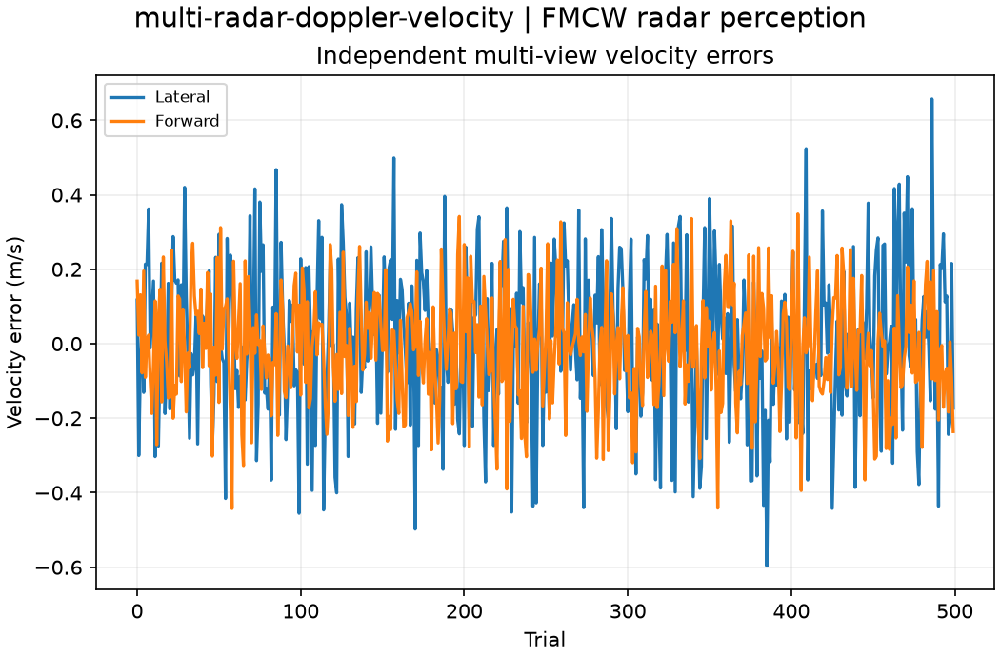

Reproducible FMCW radar perception. Units and field components are printed on the scientific axes. peak d-q quantities use exp(+i omega t); terminal currents point into the protected line.
Sealed numeric archive | Summary CSV | Physical parameters | Run request | Source and environment

| velocity_rmse_m_s | 0.24991307754511244 |
|---|
These are simulations, not hardware measurements. Network-model, measurement, timing and statistical uncertainty require distinct convergence checks. Singular or unilluminated data use explicit masks.
Source revision: 86f05ddc4ec5c2cb010601136913b19da53d1643.
Dirty checkout: False.
Configuration SHA-256: c22a2431dabeadbc34071b36830a3358ad10f403175d52846e4b5d5a034bc276.
Replay preserves original source and parameter provenance. SHA-256 manifests detect changed bytes; they are unsigned integrity records, not certificates of physical validity.